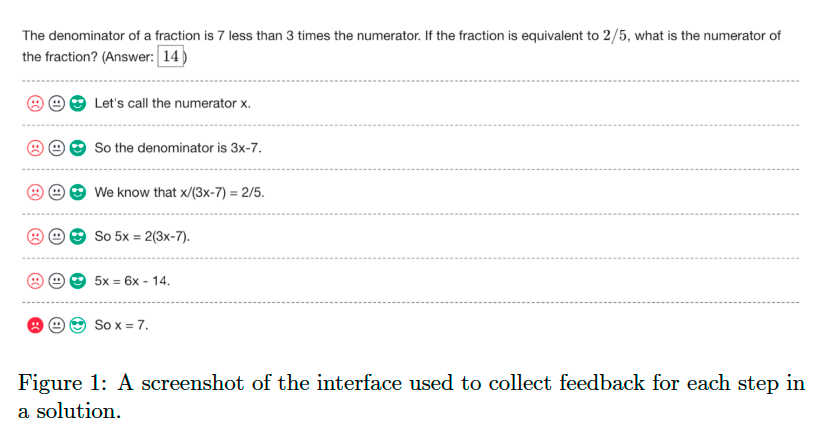
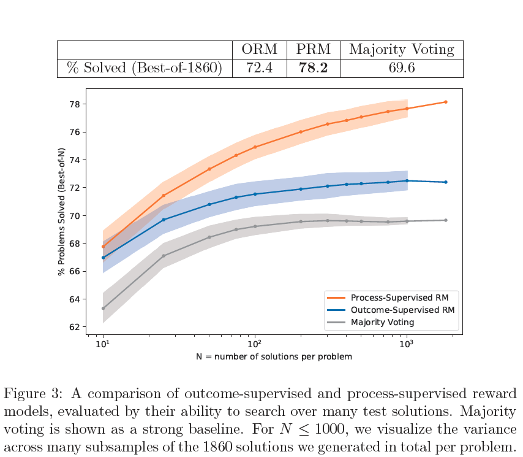
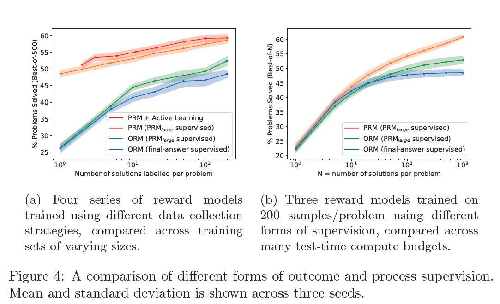
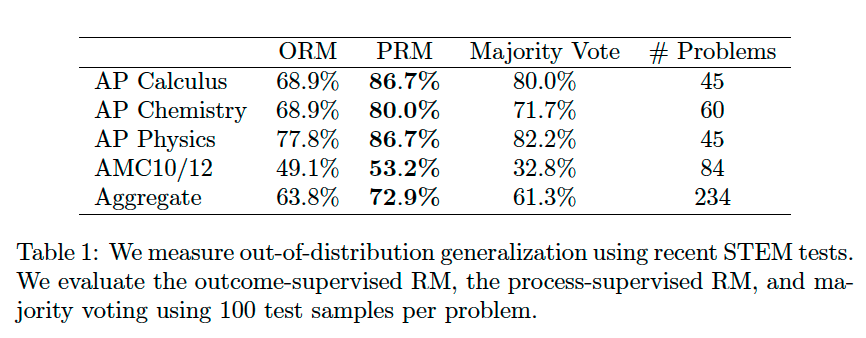

Let’s Verify Step by Step#
Note
To train more
reliable models, we can turn either to outcome supervision, which provides
feedback for a final result, or process supervision, which provides feedback
for each intermediate reasoning step.
We conduct our
own investigation, finding that process supervision significantly outperforms
outcome supervision for training models to solve problems from the
challenging MATH dataset.
Methods#
We conduct experiments in two separate regimes: large-scale and smallscale. At each model scale, we use a single fixed model to generate all solutions. We
call this model the generator.
We do not attempt to improve the generator with reinforcement learning (RL). When we discuss outcome and process supervision, we are specifically referring to the supervision given to the reward model.
Tip
We focus exclusively on how to train the most reliable reward model possible. We evaluate a reward model by its ability to perform best-of-N search over uniformly sampled solutions from the generator.
Base Models#
All large-scale models are finetuned from the base GPT-4 model. The small-scale base models are similar in design to GPT-4, but they were pretrained with roughly 200 times less compute. As an additional pretraining step, we finetune all models on a dataset of roughly 1.5B math-relevant tokens, which we call MathMix.
Generator#
We few-shot generate solutions to MATH training problems, filter to those that reach the correct final answer, and finetune the base model on this dataset for a single epoch.
Data Collection#
To collect process supervision data, we present human data-labelers with stepby- step solutions to MATH problems sampled by the large-scale generator. Their task is to assign each step in the solution a label of positive, negative, or neutral. We refer to the entire dataset of step-level labels collected as PRM800K. The PRM800K training set contains 800K step-level labels across 75K solutions to 12K problems.

During data collection, we must decide which solutions to surface to datalabelers. We would prefer to surface
solutions that are more likely to fool our best reward model. To that end, we choose to surface convincing wrong-answer solutions. We use the term convincing
to refer to solutions that are rated highly by our current best PRM, and
we use wrong-answer to refer to solutions that reach an incorrect final answer.
Outcome-supervised Reward Models (ORMs)#
We uniformly sample a fixed number of solutions per problem from the generator, and we train the ORM to predict whether each solution is correct or incorrect.
Process-supervised Reward Models (PRMs)#
We train PRMs to predict the correctness of each step after the last token in each step. This prediction takes the form of a single token, and we maximize the log-likelihood of these target tokens during training. The PRM can therefore be trained in a standard language model pipeline without any special accommodations.
Tip
We train our PRMs by fine-tuning the MathMix model to predict the probability
of positive, negative, and neutral labels given a solution prefix ending in one of
our labeled steps.
Language modeling task \(\to\) classification task.

When we provide process supervision, we deliberately choose to supervise only up to the first incorrect step.
Large-scale Supervision#
We train the large-scale PRM using the step-level labels in PRM800K. To ensure the large-scale ORM baseline is as strong as possible, we train on 100 uniform samples per problem from the generator.

Small-scale Synthetic Supervision#
To better compare outcome and process supervision, we perform the relevant ablations by using the large-scale PRM to supervise smaller models.
Process vs Outcome Supervision#
We first sample between 1 and 200 solutions per problem from a small-scale generator. For each dataset, we provide three forms of supervision: process supervision from \(\text{PRM}_\text{large}\), outcome supervision from \(\text{PRM}_\text{large}\), and outcome supervision from final-answer checking. The choice of supervision is the only difference between these three series of reward models, which are otherwise trained on identical datasets.

Active Learning#
Finally, we investigate the impact of active learning. We train a small-scale reward model, \(\text{PRM}_\text{selector}\), on a single sample from each problem, and we use this model to score 1000 samples per problem.
To train each of our larger reward models, we select N samples per problem such that 80% are the most convincing (according to \(\text{PRM}_\text{selector}\)) wrong-answer samples, and 20% are the most convincing samples that remain (right- or wrong-answer).
OOD Generalization#
For OOD problems, the PRM outperforms both the ORM and majority voting. This shows us that the PRM can tolerate a modest amount of distribution shift and that its strong performance holds up on fresh test questions.

Takeaways#
Tip
Process supervision can train much more reliable reward models than outcome supervision.
Large reward model can reliably approximate human supervision for smaller reward models, and that it can be used to efficiently conduct large-scale data collection ablations.
Active learning leads to a 2.6× improvement in the data efficiency of process supervision.